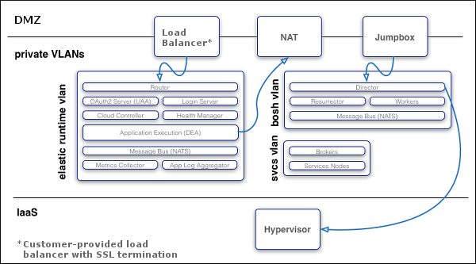

Understanding Cloud Foundry Security
Pivotal protects customers from security threats by applying security controls and by isolating customer applications and data.
Cloud Foundry:
Implements role-based access controls, applying and enforcing roles and permissions to ensure that users can only view and affect the spaces for which they have been granted access.
Ensures security of application bits in a multi-tenant environment.
Prevents possible denial of service attacks through resource starvation.
Before you read this document you might want to become familiar with the general system architecture.
System Boundaries and Access
As the image below shows, in a typical deployment of Cloud Foundry, the components run on virtual machines (VMs) that exist within a VLAN. In this configuration, the only access points visible on a public network are a load balancer that maps to one or more Cloud Foundry routers and, optionally, a NAT VM and a jumpbox. Because of the limited number of contact points with the public internet, the surface area for possible security vulnerabilities is minimized.
Note: Pivotal recommends that you also install a NAT VM for outbound requests and a jumpbox to access the BOSH Director, though these access points are optional depending on your network configuration.

Protocols
All traffic from the public internet to the Cloud Controller and UAA happens over HTTPS. Inside the boundary of the system, components communicate over a publish-subscribe (pub-sub) message bus, NATS, and also HTTP.
Application Traffic
When an app instance starts, the DEA allocates an IP address and also assigns an arbitrary port to the Application Container. The application uses the PORT environment variable provided in the container environment to determine which port to listen on. Because the DEA assigns a random value to the PORT environment variable, the value is generally unique for each application instance.
The router handles all inbound traffic to applications, routing traffic to one of the application instances.
A DEA has a single IP address. If you configure the deployment with the cluster on a VLAN, as recommended, then all traffic goes through the following levels of network address translation:
Inbound: From the load balancer through the router to the DEA, then from the DEA to the App Container.
Outbound: From the App Container to the DEA, then to the gateway on the DEA virtual network interface. This gateway might be a NAT to external networks depending on your IaaS.
The image below shows traffic flow through the recommended deployment configuration.

Network Traffic Rules
Cloud Foundry implements network traffic rules using Linux iptables on the component VMs. Operators can configure rules to prevent system access from external networks and between internal components, and to restrict applications from establishing connections over the DEA network interface.
Operators can use either of the following to configure these rules:
Cloud Foundry Application Security Groups: An Application Security Group (ASG) consists of a list of access rules to control application outbound traffic. Operators can define Cloud Foundry ASGs both in a manifest and on the cf Command Line Interface (CLI), however, Cloud Foundry ASGs defined in a manifest are valid only until operators update them on the CLI. For this reason, Pivotal recommends that operators use the CLI to create and bind Cloud Foundry ASGs to the running and staging deployment phases for greater flexibility.
DEA Network Properties: Operators can configure the
allow_networksanddeny_networksparameters for DEAs to prohibit communication between system components and applications. Any subsequent Cloud Foundry ASG configurations will overwrite these configurations.
Note: Pivotal recommends that you use Cloud Foundry ASGs to specify egress access rules for your applications. This functionality enables you to more securely restrict application outbound traffic to predefined routes.
Spoofing
If an IP, MAC, or ARP spoofing attack bypasses the physical firewall for your deployment, Cloud Foundry network traffic rules help prevent the attack from accessing application containers. Cloud Foundry uses application isolation, operating system restrictions, and encrypted connections to further mitigate risk.
BOSH
Operators deploy Cloud Foundry with BOSH. The BOSH Director is the core orchestrating component in BOSH: it controls VM creation and deployment, as well as other software and service lifecycle events. You use HTTPS to ensure secure communication to the BOSH Director.
Note: Pivotal recommends that you deploy the BOSH Director on a subnet that is not publicly accessible, and access the BOSH Director from a jumpbox on the subnet or through VPN.
BOSH includes the following functionality for security:
Communicates with the VMs it launches over NATS. Because NATS cannot be accessed from outside Cloud Foundry, this ensures that published messages can only originate from a component within your deployment.
Provides an audit trail through the
bosh taskscommand. This command shows all actions that an operator has taken with BOSH.Allows you to set up individual login accounts for each operator. BOSH operators have root access.
Note: BOSH does not encrypt data stored on BOSH VMs. Your IaaS might encrypt this data.
Authentication and Authorization
User Account and Authentication (UAA) is the central identity management service for the Elastic Runtime platform and its various components.
UAA acts as an OAuth2 Authorization Server and issues access tokens for applications that request platform resources. The tokens are based on the JSON Web Token and are digitally signed by UAA.
Operators can configure the identity store in UAA. If users register an account with the Cloud Foundry platform, UAA acts as the user store and stores user passwords in the UAA database using bcrypt. UAA also supports connecting to external user stores through LDAP and SAML. Once an operator has configured the external user store, such as a corporate Microsoft Active Directory, users can use their LDAP credentials to gain access to the Cloud Foundry platform instead of registering a separate account. Alternatively, operators can use SAML to connect to an external user store and enable single sign-on for users into the Cloud Foundry platform.
Managing User Access with Role-Based Access Control
Applications that users deploy to Cloud Foundry exist within a space. Spaces exist within orgs. To view and access an org or a space, a user must be a member of it. Cloud Foundry uses role-based access control (RBAC), with each role granted permissions to either an org or a specified space. For more information on roles and permissions, refer to the Orgs, Spaces, Roles, and Permissions topic.
For more information, see Understanding Apps Manager Permissions and Managing User Spaces in Accounts using the Apps Manager.
Security for Service Broker Integration
The Cloud Controller authenticates every request with the Service Broker API using HTTP or HTTPS, depending on which protocol you specify during broker registration. The Cloud Controller rejects any broker registration that does not contain a username and password.
Service instances bound to an app contain credential data. Users specify the binding credentials for user-provided service instances, while third-party brokers specify the binding credentials for managed service instances. The VCAP_SERVICES environment variable contains credential information for any service bound to an app. Cloud Foundry constructs this value from encrypted data that it stores in the Cloud Controller Database (CCDB).
Note: The selected third-party broker controls how securely to communicate managed service credentials.
A third-party broker might offer a dashboard client in its catalog. Dashboard clients require a text string defined as a client_secret. Cloud Foundry does not store this secret in the CCDB. Instead, Cloud Foundry passes the secret to the UAA component for verification using HTTP or HTTPS.
Software Vulnerability Management
Cloud Foundry manages software vulnerability using releases and BOSH stemcells. New Cloud Foundry releases are created with updates to address code issues, while new stemcells are created with patches for the latest security fixes to address any underlying operating system issues.
Ensuring Security for Application Artifacts
Cloud Foundry secures both the code and the configuration of an application using the following functionality:
Application developers push their code using the Cloud Foundry API. Cloud Foundry secures each call to the CF API using the UAA and SSL.
The Cloud Controller uses RBAC to ensure that only authorized users can access a particular application.
The Cloud Controller stores the configuration for an application in an encrypted database table. This configuration data includes user-specified environment variables and service credentials for any services bound to the app.
Cloud Foundry runs the app inside a secure container. For more information, see the Application Isolation with Containers section.
Cloud Foundry operators can configure network traffic rules to control inbound communication to and outbound communication from an app. For more information, see the Network Traffic Rules section.
Application Isolation with Containers
Each application deployed to Cloud Foundry runs within its own self-contained environment, a Linux Warden container. Cloud Foundry operators can configure whether contained applications can directly interact with other applications or other Cloud Foundry system components.
Applications are typically allowed to invoke other applications in Cloud Foundry by leaving the system and re-entering through the load balancer positioned in front of the Cloud Foundry routers. The Warden containers isolate processes, memory, and the file system. Each Warden container also provides a dedicated virtual network interface that establishes IP filtering rules for the app, which are derived from network traffic rules. This restrictive operating environment is designed for security and stability.
Isolation is achieved by namespacing kernel resources that would otherwise be shared. The intended level of isolation is set such that multiple containers present on the same host cannot detect each other. This means that each container is given its own Process ID (PID), namespace, network namespace, and mount namespace.
Resource control is managed using Linux Control Groups (cgroups). Each container is placed in its own cgroup, which requires the container to use a fair share of CPU compared to the relative CPU share of other containers. This placement also determines the maximum amount of memory the container may use.
Networking
The DEA for each Warden container assigns the container a dedicated virtual network interface. This interface is one side of a virtual ethernet pair created on the host VM. The other side of the virtual ethernet pair is only visible on the host from the root namespace. The pair is configured to use IPs in a small and static subnet. Traffic to and from the container is forwarded using NAT. Operators can configure global and container-specific network traffic rules that become Linux iptable rules to filter and log outbound network traffic.
Filesystem
Every container includes a private root filesystem. For Linux containers, this filesystem is created by stacking a read-only base filesystem and a container-specific read-write filesystem, commonly known as an overlay filesystem. The read-only filesystem contains the minimal set of Linux packages and Warden-specific modifications common to all containers. Containers can share the same read-only base filesystem because all writes are applied to the read-write filesystem. The read-write filesystem is unique to each container and is created by formatting a large sparse file of a fixed size. This fixed size prevents the read-write filesystem from overflowing into unallocated space.
Security Event Logging and Auditing
For operators, Cloud Foundry provides an audit trail through the bosh tasks command. This command shows all actions that an operator has taken with the platform.
Additionally, operators can redirect Cloud Foundry component logs to a standard syslog server using the syslog_daemon_config property in the metron_agent job of cf-release.
For users, Cloud Foundry records an audit trail of all relevant API invocations of an app. The CLI command cf events returns this information.
Running a Secure Deployment
To help run a secure deployment, Pivotal recommends the following:
Configure UAA clients and users using a BOSH manifest. Limit and manage these clients and users as you would any other kind of privileged account.
Deploy within a VLAN that limits network traffic to individual VMs. This reduce the possibility of unauthorized access to the VMs within your BOSH-managed cloud.
Enable HTTPS for applications and SSL database connections to protect sensitive data transmitted to and from applications.
Ensure that the jumpbox is secure, along with the load balancer and NAT VM.
Encrypt stored files and data within databases to meet your data security requirements. Deploy using industry standard encryption and the best practices for your language or framework.
Prohibit promiscuous network interfaces on the trusted network.
Review and monitor data sharing and security practices with third-party services that you use to provide additional functionality to your application.
Store SSH keys securely to prevent disclosure, and promptly replace lost or compromised keys.
Use Cloud Foundry’s RBAC model to restrict your users’ access to only what is necessary to complete their tasks.
Use a strong passphrase for both your Cloud Foundry user account and SSH keys.